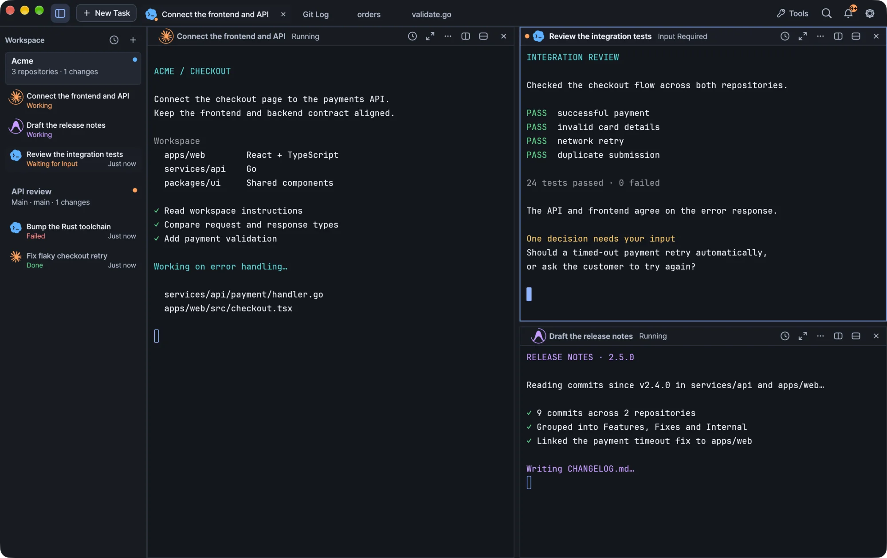

Create named workspaces for a folder, work across several repositories, follow tasks in the sidebar and arrange terminal splits.
A workspace is a named view of a folder with its own tasks, terminals, splits and drafts. Create several for the same folder when different pieces of work need their own terminals and layouts.

Kiln running a demo workspace.
Create a workspace
Choose + in the workspace sidebar, or press ⌘N.
Enter a name and choose a folder.
The same dialog lists the workspaces that already exist for the selected folder, so you can open one of those instead of creating another. Cancelling the dialog does not start a terminal.
Several workspaces, one folder
One folder can have as many workspaces as you need, for example API review and Documentation. Each workspace keeps its own:
tasks and terminal sessions,
split layout,
unsent requests (drafts).
Kiln restores each workspace independently when it reopens. Files and Git history belong to the folder, so every workspace for that folder sees the same files and the same history.
One workspace, several repositories
When your frontend, backend and shared libraries live in separate Git repositories, open their parent folder, such as ~/dev/projects, as the workspace folder.
Agents work from the parent folder. Kiln keeps that folder as the agent's working root and can include the discovered repository layout with your request. Inspecting a repository does not change the task's working directory.
Git targets one repository. Use the repository selector inside the Git and GitHub tools to choose which repository an operation applies to. See Git and GitHub.
A workspace is a boundary for navigation and agent context. Each repository keeps its own Git history.
The task list
The sidebar shows the tasks of each workspace and the state each one reports: Working, Waiting for Input, Done or Failed.
The sidebar previews up to three tasks per workspace, with an option to show all.
Running work comes first, followed by requests awaiting your input and then older failures.
Recent work uses the same activity state and keeps its order stable while you have it open.
Linked worktrees are distinguished from the main repository's workspace.
Click a task to reveal its workspace, tab and split, including a pane hidden by zoom.
How states are reported
Kiln shows a state only when it is reported. An agent has to report its state, or show a running title Kiln recognizes, before Kiln marks it as running. Shell-integrated commands can report their own running state.
Sessions that report nothing appear as open sessions. An idle terminal is not treated as a completed task, and an agent launch command that has not finished does not mark an idle agent as running. See Agents for agent states and indicators, and Terminal for reporting activity from your own scripts.
Start a task
Choose New Task, enter a request, pick Claude Code, Codex or Antigravity, and start. The agent picker stays directly below the request input. Repository context scrolls separately, so it never pushes the start action out of reach.
Each panel header has controls to split right, split down and close the panel. When a split is very narrow, these actions move into the panel menu so their click targets do not overlap.
Move a pane
Drag a pane's title to the left, right, top or bottom edge of another pane. A highlight shows where it will land in the resulting layout. Moving a pane keeps its terminal session and running process; Kiln does not open a replacement shell.
Resize panes
Drag a divider to resize the panes on either side.
Where you drag
What moves
Away from an aligned intersection
Only that segment of the divider.
Near an aligned intersection
The connected segments, highlighted together, move as one boundary.
At the intersection itself
Your first horizontal or vertical movement chooses the axis.
The selected range stays fixed for the rest of that drag.
Dividers snap to halves, thirds and quarters of the whole terminal area, and to the positions of adjacent dividers. A captured line becomes brighter and thicker and stays attached through a short release margin.
Tip Hold ⌥ while dragging to bypass snapping and linked movement. Press Esc to cancel the drag and restore the layout from before it started.
Highlights appear only while you drag. A destination that is blocked cannot change the layout.
Switch workspaces and tasks
Use the sidebar to move between workspaces and tasks. Switching workspaces keeps every running process alive.
Close panels, workspaces and the window
Closing a workspace ends only that workspace's sessions. Kiln still asks before it discards drafts.
Closing a running process asks for confirmation. Select Don’t ask again to turn off process-termination prompts for panels, tabs and workspaces. The choice is saved only after you confirm the close, and you can turn the prompts back on in Settings → Behavior. Warnings about unsaved content and launch requests stay on.
Closing the window asks about unsaved files and drafts, and waits for running transfers, database writes and worktree creation. Your terminals keep running in the background. See Terminal.
Keyboard shortcuts
macOS
Action
⌘N
New workspace
⌘K
Commands and navigation
⌘J
Recent work
⌘B
Show or hide the workspace sidebar
⌘,
Settings
Ctrl + `
Quick terminal
You can customize navigation shortcuts in Settings.
On Windows, app shortcuts shown with ⌘ use Ctrl+Shift, ⇧⌘ uses Ctrl+Shift+Alt and ⌥⌘ uses Ctrl+Alt.
문서Kiln 사용하기
워크스페이스와 작업
폴더에 이름 붙인 워크스페이스를 만들고, 여러 저장소를 함께 다루고, 사이드바에서 작업을 확인하고, 터미널 분할 화면을 배치합니다.
워크스페이스는 폴더에 이름을 붙여 만든 보기로, 작업·터미널·분할 화면·초안을 따로 가집니다. 같은 폴더에서 여러 일을 각자의 터미널과 레이아웃으로 진행하려면 워크스페이스를 여러 개 만드세요.
데모 워크스페이스로 실행한 Kiln
워크스페이스 만들기
워크스페이스 사이드바에서 +를 선택하거나 ⌘N을 누릅니다.
이름을 입력하고 폴더를 선택합니다.
이 대화상자에는 선택한 폴더에 이미 있는 워크스페이스도 나열되므로, 새로 만들지 않고 기존 워크스페이스를 열어도 됩니다. 대화상자를 취소하면 터미널은 시작되지 않습니다.
폴더 하나에 워크스페이스 여러 개
한 폴더에 API 리뷰, 문서처럼 워크스페이스를 필요한 만큼 만들 수 있습니다. 워크스페이스마다 다음을 따로 관리합니다.
작업과 터미널 세션
분할 레이아웃
보내지 않은 요청(초안)
Kiln을 다시 열면 워크스페이스가 각각 따로 복원됩니다. 파일과 Git 기록은 폴더에 속하므로, 같은 폴더의 워크스페이스는 모두 같은 파일과 같은 기록을 봅니다.
워크스페이스 하나에 저장소 여러 개
프론트엔드, 백엔드, 공유 라이브러리가 각각 다른 Git 저장소에 있다면 ~/dev/projects 같은 상위 폴더를 워크스페이스 폴더로 여세요.
에이전트는 상위 폴더에서 작업합니다. Kiln은 이 폴더를 에이전트의 작업 루트로 유지하고, 찾아낸 저장소 구성을 요청에 함께 넣을 수 있습니다. 저장소를 살펴봐도 작업이 실행되는 디렉터리는 바뀌지 않습니다.
Git은 저장소 하나를 대상으로 합니다. Git·GitHub 도구 안의 저장소 선택기에서 작업을 적용할 저장소를 고르세요. Git과 GitHub를 참고하세요.
워크스페이스는 탐색과 에이전트 컨텍스트를 나누는 경계입니다. Git 기록은 저장소마다 따로 유지됩니다.
작업 목록
사이드바에는 워크스페이스별 작업과 각 작업이 보고한 상태(작업 중, 입력 대기, 완료, 실패)가 표시됩니다.
워크스페이스마다 작업을 최대 세 개까지 미리 보여 주며, 모두 보기를 선택해 펼칠 수 있습니다.
실행 중인 작업이 맨 위에 오고, 입력을 기다리는 요청, 이전에 실패한 작업 순으로 이어집니다.
최근 작업도 같은 활동 상태를 쓰며, 열어 두는 동안에는 순서가 바뀌지 않습니다.
연결된 worktree는 메인 저장소의 워크스페이스와 구분해 표시합니다.
작업을 클릭하면 해당 워크스페이스, 탭, 분할 화면이 나타납니다. 확대 때문에 가려진 패널도 다시 보입니다.
상태를 보고하는 방식
Kiln은 보고된 상태만 표시합니다. 에이전트가 상태를 보고하거나 Kiln이 인식하는 실행 중 제목을 띄워야 실행 중으로 표시합니다. 셸 통합이 적용된 명령은 실행 중 상태를 직접 보고할 수 있습니다.
아무것도 보고하지 않는 세션은 열린 세션으로 표시됩니다. 유휴 상태의 터미널을 완료된 작업으로 보지 않으며, 아직 끝나지 않은 에이전트 실행 명령 때문에 유휴 에이전트가 실행 중으로 표시되지도 않습니다. 에이전트 상태와 표시는 에이전트를, 직접 만든 스크립트에서 활동을 보고하는 방법은 터미널을 참고하세요.
작업 시작하기
새 작업을 선택하고 요청을 입력한 뒤 Claude Code, Codex, Antigravity 중 하나를 골라 시작합니다. 에이전트 선택기는 요청 입력란 바로 아래에 고정되어 있습니다. 저장소 컨텍스트는 따로 스크롤되므로 시작 버튼이 화면 밖으로 밀려나지 않습니다.
에이전트 CLI는 미리 설치하고 로그인해 두어야 합니다. 설치와 업데이트와 에이전트를 참고하세요.
분할 화면과 패널 레이아웃
패널 헤더마다 오른쪽으로 나누기, 아래로 나누기, 패널 닫기 버튼이 있습니다. 분할 화면이 아주 좁아지면 클릭 영역이 겹치지 않도록 이 버튼들이 패널 메뉴로 들어갑니다.
패널 옮기기
패널 제목을 다른 패널의 왼쪽, 오른쪽, 위, 아래 가장자리로 끌어다 놓습니다. 바뀐 레이아웃에서 패널이 놓일 자리가 강조 표시됩니다. 패널을 옮겨도 터미널 세션과 실행 중인 프로세스는 그대로이며, Kiln이 대신할 셸을 새로 열지 않습니다.
패널 크기 조절하기
구분선을 드래그하면 양쪽 패널의 크기가 바뀝니다.
드래그하는 위치
움직이는 대상
정렬된 교차점에서 먼 곳
그 구분선 구간만
정렬된 교차점 근처
함께 강조 표시된 연결 구간이 하나의 경계로 움직임
교차점 바로 위
처음 움직인 방향(가로 또는 세로)으로 축이 정해짐
한 번 정해진 범위는 그 드래그가 끝날 때까지 바뀌지 않습니다.
구분선은 전체 터미널 영역의 1/2, 1/3, 1/4 지점과 이웃한 구분선 위치에 맞춰 붙습니다. 붙은 선은 더 밝고 두꺼워지며, 조금 더 끌어도 짧은 여유 구간 동안은 떨어지지 않습니다.
팁 드래그하는 동안 ⌥를 누르고 있으면 스냅과 연결 이동이 적용되지 않습니다. Esc를 누르면 드래그를 취소하고 시작 전 레이아웃으로 되돌립니다.
사이드바에서 워크스페이스와 작업 사이를 오갑니다. 워크스페이스를 전환해도 실행 중인 프로세스는 모두 계속 실행됩니다.
패널, 워크스페이스, 창 닫기
워크스페이스를 닫으면 그 워크스페이스의 세션만 종료됩니다. 다만 초안을 버리기 전에는 확인을 받습니다.
실행 중인 프로세스를 닫을 때는 확인을 받습니다. 다시 묻지 않기를 선택하면 패널, 탭, 워크스페이스에서 프로세스 종료를 더 이상 묻지 않습니다. 이 선택은 닫기를 확인해야 저장되며, 설정 → 동작에서 다시 켤 수 있습니다. 저장하지 않은 내용과 실행 요청에 대한 경고는 계속 표시됩니다.
창을 닫으면 저장하지 않은 파일과 초안을 확인하고, 진행 중인 전송, 데이터베이스 쓰기, worktree 생성이 끝나기를 기다립니다. 터미널은 백그라운드에서 계속 실행됩니다. 터미널을 참고하세요.
키보드 단축키
macOS
동작
⌘N
새 워크스페이스
⌘K
명령과 탐색
⌘J
최근 작업
⌘B
워크스페이스 사이드바 보기/숨기기
⌘,
설정
Ctrl + `
빠른 터미널
탐색 단축키는 설정에서 바꿀 수 있습니다.
Windows에서는 ⌘로 표시된 앱 단축키 대신 Ctrl+Shift를, ⇧⌘ 대신 Ctrl+Shift+Alt를, ⌥⌘ 대신 Ctrl+Alt를 씁니다.
 Kiln
Kiln